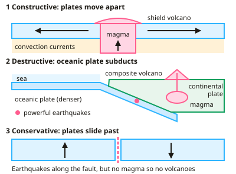

GCSE Geography · Topic 1
The challenge of natural hazards
The challenge of natural hazards is about the earthquakes, volcanoes, storms and droughts that threaten people, and how we respond.
We will study tectonic hazards and how they are managed, global atmospheric circulation, tropical storms and drought.
Then we look at extreme weather in the U K, the evidence and causes of climate change, and how we can mitigate it and adapt.
- 10 subtopics
- 550 questions
- Free: 1.1 notes and 10 questions
In this topic
- 1.1Tectonic hazardsFree below · 16 questions
- 1.2Weather hazards and climate changeOpen in Full Marks · 56 questions
- 1.3Global atmospheric circulation and climate zonesOpen in Full Marks · 78 questions
- 1.4Tropical storms: formation, impacts and responsesOpen in Full Marks · 37 questions
- 1.5Drought: causes, impacts and managementOpen in Full Marks · 42 questions
- 1.6Evidence for and causes of climate change (natural and human)Open in Full Marks · 75 questions
- 1.7Managing tectonic hazards: monitoring, prediction, planning and protection, with contrasting HIC and LIC case studiesOpen in Full Marks · 40 questions
- 1.8Extreme weather in the UK: causes, impacts and the Somerset Levels flooding case studyOpen in Full Marks · 76 questions
- 1.9Managing climate change: mitigation (carbon capture, renewables, international agreements) and adaptation strategiesOpen in Full Marks · 70 questions
- 1.10Weather: measuring and recording weather with a weather stationOpen in Full Marks · 60 questions
1.1 · Free notes
Tectonic hazards

Key points
- The Earth's crust is divided into tectonic plates moving on the mantle, driven by convection currents and slab pull.
- Constructive (divergent) boundaries: plates move apart, magma rises, forming shield volcanoes and gentle earthquakes. Destructive (convergent): an oceanic plate subducts beneath a continental plate, forming composite volcanoes and powerful earthquakes. Conservative: plates slide past each other, causing earthquakes but no volcanoes.
- Primary effects happen immediately (buildings collapse, deaths, injuries); secondary effects follow (fires, disease, unemployment, homelessness).
- Immediate responses include search and rescue and emergency aid; long-term responses include rebuilding, improved building codes and insurance claims.
- People live in hazardous areas because of fertile volcanic soils, geothermal energy, mineral resources, tourism and family or employment ties.
- Risk is reduced by monitoring, prediction, protection (earthquake-resistant buildings) and planning (evacuation routes and drills).
In more detail
- Plate margins: destructive — oceanic plate subducts under continental, e.g. Nazca under the South American plate, forming the Andes volcanoes; collision — India meeting Eurasia builds the Himalayas, with earthquakes but no volcanoes; conservative — plates slide past, e.g. the San Andreas Fault.
- Why plates move: convection currents in the mantle, plus slab pull (a sinking plate drags the rest) and ridge push.
- Measuring size: the moment magnitude scale is logarithmic, so a magnitude 7 releases about 1000 times more energy than a magnitude 5.
- Contrasting effects: Christchurch 2011 (magnitude 6.3) killed 185 people; Nepal 2015 (magnitude 7.8) killed about 9000 — wealth, building quality and preparation made the difference.
- Why people stay: fertile volcanic soils around Mount Etna support vineyards and orchards; Iceland uses geothermal energy to heat about 90% of its homes.
Practice
Tectonic hazards: 10 questions
Pick an answer to check it, or open the answer for the explanation.
1. At which plate boundary do plates move apart?
- Destructive
- Constructive
- Conservative
- Collision
Show answer
B: Constructive. Magma rises to fill the gap, creating new crust.
2. Which is a primary effect of an earthquake?
- Disease spreading weeks later
- Buildings collapsing
- Loss of tourism income
- Long-term homelessness
Show answer
B: Buildings collapsing. Primary effects are caused directly by the ground shaking.
3. Why do people continue to live near volcanoes?
- There are no hazards
- Fertile soils, geothermal energy, minerals and tourism
- Volcanoes prevent earthquakes
- Governments force them to
Show answer
B: Fertile soils, geothermal energy, minerals and tourism. The benefits often outweigh the perceived risk.
4. What happens at a conservative plate margin?
- Plates move apart
- Plates slide past each other
- One plate subducts
- New crust forms
Show answer
B: Plates slide past each other. Earthquakes occur, but there are no volcanoes.
5. Which is an example of planning to reduce earthquake risk?
- Monitoring seismic waves
- Evacuation routes and practice drills
- Building on the fault line
- Predicting eruptions
Show answer
B: Evacuation routes and practice drills. Planning prepares people before an event occurs.
6. What type of volcano forms at a destructive plate margin?
- Shield volcano, gentle eruptions
- Composite volcano, violent eruptions
- No volcanoes form there
- Only earthquakes occur, never volcanoes
Show answer
B: Composite volcano, violent eruptions. Thick, sticky magma builds steep-sided composite volcanoes.
7. Which process, driven by a cold, dense plate edge sinking into the mantle, helps to move tectonic plates?
- Longshore drift
- Slab pull
- Isostatic uplift
- Hydraulic action
Show answer
B: Slab pull. Slab pull: the dense edge of a subducting plate sinks and drags the rest of the plate behind it. Convection currents also help. The other options are coastal or river processes, or uplift.
8. Why are volcanic eruptions at constructive plate margins, such as Iceland, usually gentle?
- The lava is thick and sticky, so it cannot travel far
- Subduction melts wet oceanic crust beneath the vent
- The lava is runny and low in silica, so gas escapes easily
- Plates collide and trap gas under great pressure
Show answer
C: The lava is runny and low in silica, so gas escapes easily. At constructive margins, basaltic magma is runny and low in silica. Gas escapes easily, so eruptions are effusive and form shield volcanoes. Thick, sticky lava is typical of destructive margins.
9. Days after an earthquake damages water pipes in a city, cholera spreads. What type of effect is the cholera outbreak?
- Immediate response
- Primary effect
- Long-term response
- Secondary effect
Show answer
D: Secondary effect. Secondary effects happen after the initial shaking, as a result of the primary damage. Broken water pipes led to disease. Primary effects are the immediate ones, such as collapsed buildings.
10. An earthquake kills 2,400 people in a region of 60,000. What percentage of the population died?
- 24%
- 0.4%
- 2.4%
- 4%
Show answer
D: 4%. 2,400 ÷ 60,000 = 0.04, and 0.04 × 100 = 4%. The other options come from misplacing the decimal point.
Keep going in Full Marks
Full Marks has 16 questions on Tectonic hazards (6 more than here), set out in practice levels. You also get notes and 3D models for all 10 subtopics of The challenge of natural hazards, plus games, timed exams and past papers.
On your exam board
- AQATopic 1: The challenge of natural hazards
- OCR ATopic 3: UK environmental challenges, Topic 6: Environmental threats to our planet
- OCR BTopic 1: Global hazards, Topic 2: Changing climate
- EdexcelTopic 2: Weather hazards and climate change
- CambridgeTopic 2.1: Earthquakes and volcanoes, Topic 2.4: Weather, Topic 2.5: Climate and natural vegetation, Topic 3.2: Food production, Topic 3.7: Environmental risks of economic development